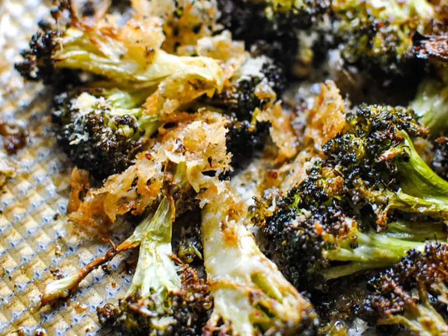

Lemon Parmesan Roasted Broccoli

Description
This recipe for lemon Parmesan roasted broccoli takes ordinary roasted broccoli to EXTRAordinary! And there's no extraordinary effort involved.
- 1 pound broccoli florets
- 1 tablespoon olive oil
- 1/2 teaspoon kosher salt
- 1/4 cup grated Parmesan cheese
- 1 tablespoon lemon zest
- Preheat the oven to 425 degrees F (220 degrees C).
- On a half-sheet pan, toss broccoli florets with olive oil and kosher salt. Spread out evenly on the pan.
- Roast broccoli in the preheated oven until tender, 20 to 25 minutes.
- Sprinkle broccoli with Parmesan cheese and lemon zest. Return to the oven until cheese is melted and golden brown, 3 to 5 minutes. Keep a close eye!